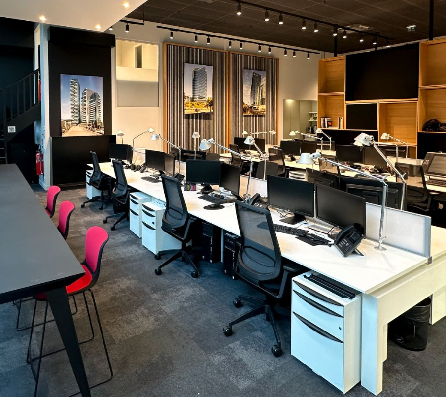

Découvrez l'agence, son organisation et l'environnement dans lequel j'ai réalisé mon stage.
DécouvrirArquitectonica est une agence d'architecture internationale fondée en 1977 à Miami par Bernardo Fort-Brescia.
L'agence s'est progressivement développée à l'international et possède aujourd'hui plusieurs bureaux, dont celui de Paris situé au 87 rue de Richelieu.
J'ai été accueillie au sein de l'entité Arquitectonica, dans le bureau de Paris, aux côtés d'architectes, chefs de projet, spécialistes techniques, designers et graphistes.
Architecture, urbanisme et conception de projets à différentes échelles.
VISITER LE SITE ↗ 02Architecture paysagère, design environnemental et projets adaptés aux enjeux climatiques.
VISITER LE SITE ↗ 03Conception de théâtres, équipements culturels, bâtiments artistiques et académiques.
VISITER LE SITE ↗ 04Design intérieur et conception d'espaces adaptés aux différents usages.
VISITER LE SITE ↗ 05Recherche et développement autour du design, du mobilier et des objets.
VISITER LE SITE ↗Une agence d'architecture peut travailler simultanément sur plusieurs projets.
Chaque projet est généralement suivi par une équipe et un chef de projet qui coordonne les différents intervenants.
Architectes, ingénieurs, bureaux d'études et spécialistes techniques collaborent afin de faire évoluer le projet en fonction des contraintes rencontrées.

Le bureau parisien rassemble différents profils professionnels et permet de travailler sur des projets nécessitant des compétences variées.
Réflexion et développement des projets architecturaux.
Production et évolution des maquettes numériques.
Création de contenus et supports de présentation.
Participation à différentes tâches liées au design.